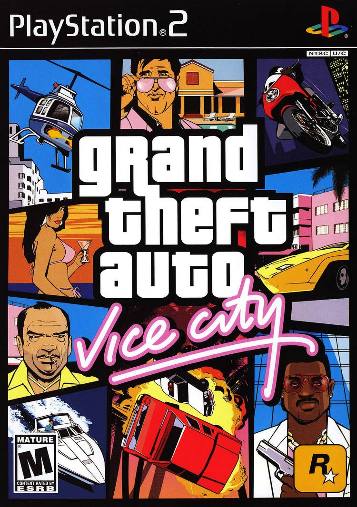

Sinopse
Grand Theft Auto: Vice City é um jogo de ação e aventura desenvolvido pela Rockstar North. O jogo se passa na fictícia cidade de Vice City, inspirada em Miami dos anos 80. O jogador controla Tommy Vercetti, um ex-membro de gangue que, após ser libertado da prisão, tenta tomar o controle do submundo criminal de Vice City, enfrentando gangues rivais e se envolvendo em uma trama de traições e vingança.
Com um vasto mundo aberto, missões variadas, uma trilha sonora dos anos 80 e uma narrativa envolvente, o jogo é considerado um dos melhores títulos da série Grand Theft Auto e um dos maiores clássicos dos videogames.
Características Principais
- Ambiente aberto e expansivo inspirado nos anos 80
- Variedade de veículos, desde carros a motos e barcos
- Trilha sonora com músicas icônicas dos anos 80
- Diversas missões principais e secundárias
- Sistema de combate melhorado e mais fluído
- Liberdade para personalizar o personagem e interagir com o mundo
Imagens Adicionais